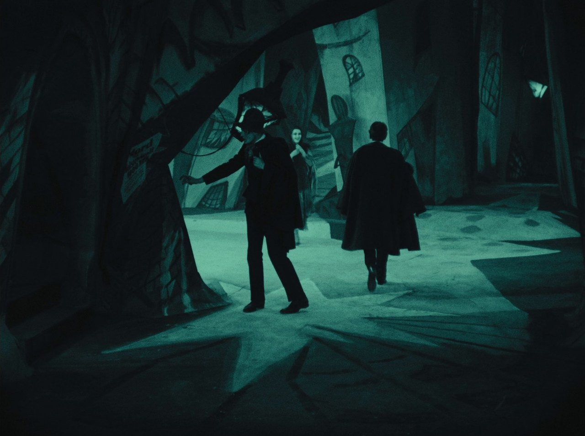

The Cabinet of Dr. Caligari, frame at 23:34
Robert Wiene · 1920 · Silent film, tinted in this copy (frame)
Free to use
The shadows and streaks of light in the streets were painted directly onto the sets. They were designed by Hermann Warm with two friends, the painters and stage designers Walter Reimann and Walter Röhrig. Fritz Lang was first chosen to direct, but he was busy filming The Spiders, so the job went to Robert Wiene. The film had a budget of 12,371 dollars.